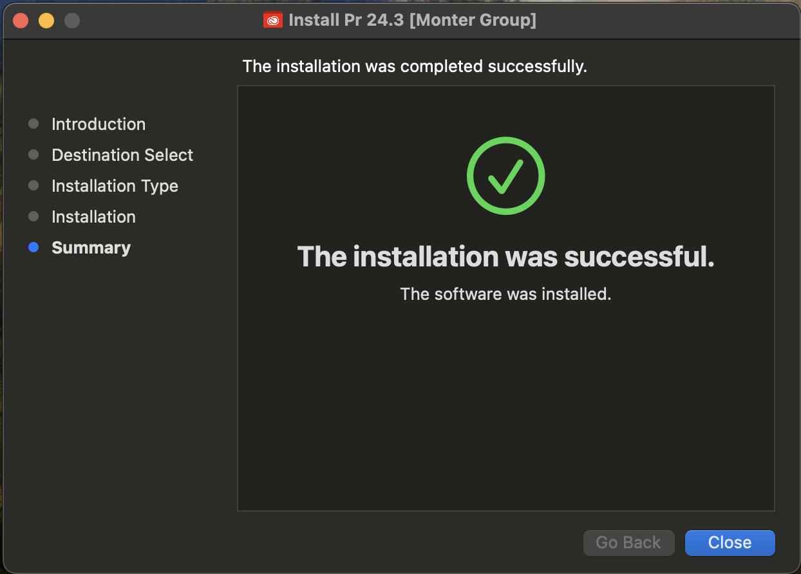
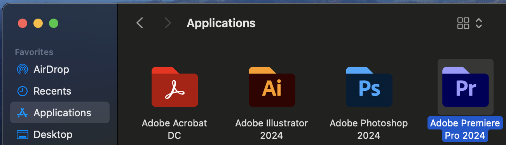
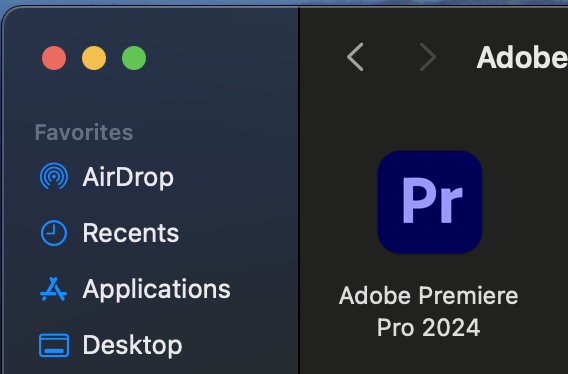
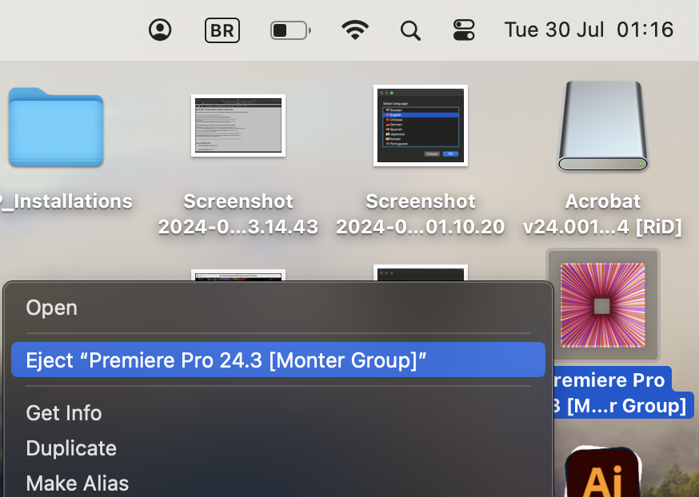
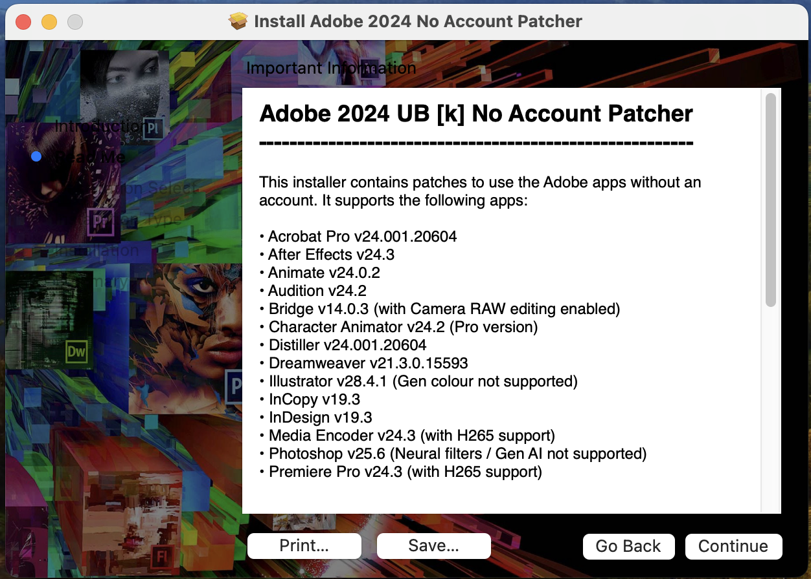

Algum Software do Adobe parou de funcionar?
Nos sistemas macOS isto é normal para quem utiliza programas
crackeados.
Infelizmente, será necessário ficar reinstalando sempre que for preciso.
Algumas vezes eles duraram mais,
e em outras menos tempo sem ser necessário reinstalar.
Não se preocupe!
O processo de instalação dos cracks da Monter Group é extremamente simples de ser realizado!
1️⃣Primeira vez instalando um crack do Monter Group em seu Mac? Clique aqui
___________________________________________________________________________
↘️ Siga o Passo-a-Passo a baixo para ter uma nova versão ↙️
Pode ser que você não precise do passo 1 ( Desinstalar ), mas mesmo assim leia-o!
⚠️ Isso pode previnir a perda de arquivos importantes seus ou
pacotes-externos instalados na versão antiga!
___________________________________________________________________________
-
Desinstale o Programa antigo
Pode ser que o programa antigo ainda esteja instalado, independente se ele não funciona mais.
Mas em alguns casos, além de parar de funcionar, o próprio sistema ja desinstala ele, pois
o Adobe indica ao macOS que este software apresenta risco ao sistema (por ser crackeado)!______________________________________________
-
Acesse o local "Applications" do Finder"
No exemplo abaixo vamos desinstalar o Adobe Illustrator

Você pode encontra-lo na barra lateral a esquerda do Finder.
______________________________________________
-
Mover o Diretório Completo do Software para a Lixeria
Observe que é o Diretório, a pasta do software que será apagado.
üõëATEN√á√ÉO:
Dentro do diretório do software, encontramos diversas pastas e arquivos nativos ou que você
utilizou e instalou anteriormente...
...como diferentes Fontes e Texturas baixadas externamente e que depois foram atribuídas ao
programa por meio alguma destas pastas.
⚠️ então lembre-se de salva-las para adiciona-las a nova versão que instalaremos, para evitar que
você perca qualquer recurso externo instalado antes.______________________________________________
-
Autorizar com Senha ou Digital a Exclusão
Para excluir o Diretório completo, isto é, para apagar o App, é necessário dar a autorização ao
sistema.
______________________________________________
-
Remova o Atalho do Programa do Desktop
Para finalizar então, tudo que falta é remover o atalho deste programa da área de trabalho caso você o
tivesse colocado la.
Ele não some automaticamente após a exclusão do software, você precisa ir la resolver.
___________________________________________________________________________
-
-
Obter a Lista de Downloads
Acesse o seguinte grupo do Telegram e deixe-o salvo, assim você sempre terá acesso
às novas versões:
 Monter Group Channel
Monter Group Channel
Será necessário criar uma conta no Telegram caso você ainda não tenha. Basta ter um número de celular para isso!
Neste canal, os desenvolvedores ficaram atualizando a última mensagem com todos os links das novas versões!
Atente-se ao versionamento disponível de programas por lá, e se correspondem aos seus atuais ou não.
Eles atualizam links mensalmente e até semalmente.
Se o seu programa esta dando problema e o versionamento no chat ainda é o mesmo, é sinal de que um novo ainda não foi publicado ali!Exemplo de como a lista fica no canal do Telegram deles:
Observe que la em cima, do lado direito desta mensagem, à uma indicação de que ela foi
editada, exatamente conforme eu expliquei acima sobre as atualizações constantes de mensagens deste canal.Sempre que precisar, neste canal, busque pelos programas que você deseja instalar, aqui estes
desenvolvedores (Monter Group) passam apenas alguns de seus softwares, se você deseja algum outro,
talvez seja recomendado buscar la no AppsTorrent EUA ou Russo assim como faremos com o Acrobat e Office.___________________________________________________________________________
Versionamento e Compactação
Até agora eu venho mantendo o Histórico de versões baixadas e a Biblioteca das ja utilizadas anteriormente
neste local:Desktop / JP_Installations / arqvsInstaladores / Softwares_Adobe_MonterGroup / 28 july / ...
Pode mudar o local! Mas anote o novo endereço pois eu vou te perguntar isso da próxima vez que for
preciso arrumar outra coisa!Então... todas as vezes que eu baixei uma nova versão, além de executá-la para a instalação, eu também a
compactei para comparar com versões futuras.
Se possível (se sobrar armazenamento), mantenha essa estratégia de compactar novas versões futuras e
as guardar. Isso ajudará meu conhecimento (Eu JP) e aprendizado sobre versionamento dos cracks, e
meu conhecimento de cracks para com o macOS.
Mas lembre-se de compactar o arquivo ".dmg" baixado (com o botão direito do mouse). Isso protegerá o arquivo de
quaisquer corrompimentos indesejados.___________________________________________________________________________
-
Instalação da Nova Versão
Neste exemplo instalaremos o Adobe Premiere
_________________________________________________
-
Execute o ".dmg"
Dois cliques para executar.
Ao executar o arquivo, você terá acesso a um menu como o da foto abaixo:

_________________________________________________
-
Execute o ".pkg" do Software Adobe
Dois cliques para executar.
Ele sempre estará nesse mesmo lugar a direita e em cima.
O azul da esquerda é um READ-ME, um manual de instruções dos próprios Desenvolvedores da Monter.
La é possível achar um forma de instalar diferente para ter acesso as ferramentas generativas dos
Softwarres Adobe originais. Se funciona eu não sei mas a chance é mais do que instalar dessa
forma padrão que estou passandoa aqui, basta traduzir para português para entender._________________________________________________
-
Clique em "Continue" na Janela de Instalação
Aqui abre-se o balão de instalação do Software desejado
Como em qualquer instalação e em qualquer OS, basta ir prosseguindo
com a intalação de agora em diante._________________________________________________
-
Defina o Disco e Clique em "Install"
Aqui você pode escolher instalar arquivos diretamente no Disco Local de seu Mac, ou até mesmo
instalar o software em um HD externo. Sim isso é possível!
Mas, para isso eu recomendo que você converse melhor com alguma IA para ela lhe explicar melhor todos os
detalhes de execução, instalação e recomendações.
_________________________________________________
-
Autorizar a Instalação
É necessário autoorizar a instalação na máquina com sua senha ou impressão digital, principalmente por
que ela é de uma fonte que não é nativa e nem conhecida pelo sistema.
_________________________________________________
-
Atenção a Esta Etapa
Aqui a barra de carregamento passará por várias etapas, inclusive uma em que
aparece escrito "Wrinting files..." e outra "Running Package Scripts...",
como na imagem abaixoSe há alguma coisa para acontecer de errado, na maioria das vezes é aqui que ela acontece.
Apareceria então alguma mensagem de erro neste momento e,
infelizmente, teríamos de esperar uma NOVA VERSÃO la no grupo do Telegram.
Mas se tudo der certo, o que é a tendência, vamos ao próximo passo...
_________________________________________________
-
Defina uma Linguagem para o Software
Acredito eu que esta linguagem não poderá ser alterada mais tarde! Apenas com uma reinstalação.

Após o "Ok" a instalação se encaminhará para o final...
_________________________________________________
-
Confirmação da Instalação e Ofertas
Aqui se abriram 2 janelas após a instalação...
A primeira indica que a instalação do crack foi concluída com sucesso e que ja pode rodar!

A segunda, abre o site do "AppsTorrent Russo" para mostrar outros Softwares Crackeados do
Monter Group (Pagos).
Contribuir com novos softwares é de grande ajuda para a equipe mander
sempre novas atualizações funcionais
_________________________________________________
Instalação Concluída
Mas antes de sair usando o programa, leia os próximos passos, pois eles podem te
poupar de uma futura e próxima dor de cabeça!_________________________________________________
-
Tudo Sobre o Diretório do Software
Os diretórios de cada softare da Adobe instalados, podem ser encontrados em
"Applications" dentro do "Finder"Dentro de cada diretório (pastas) desses, é possivel instalar varias coisas (como Ferramentas,

Fontes e Texturas) manualmente nos programas por meio de pastas que estão dentro de cada
um dos diretórios.O diretório do Premiere acabou de ser adicionado a este local da imagem. Isto

aconteceu ao final da instalação que acabamos de realizar.
Infelizmente, não temos pastas dentro do diretório do Premiere (especificamente) para dar
de exemplo sobre o que estavamos falando ali em cima (sobre instalação externa de recursos).
Mas em qualquer outro dos diretórios da imagem acima, teríamos não somente uma pasta,
mas sim, algumas delas dentro de um diretório destes.
Observe a imagem abaixo:Este diretório contém apenas o arquivo executor do software dentro...
_________________________________________________
-
Arraste o Icone Executor para o Desktop
Arrastar o arquivo executor presente no diretório da instalação, é essencial para ter acesso a
ele na área de trabalho, pois, diferente do windows, aqui os softwares não criam um shortcut
no desktop automaticamente ao serem instalados.
Ao arrastar ele para o desktop um atalho será criado por lá e o original (raiz) se manterá no diretório.
Esqueci de tirar print para explicar isso, mas acredito que não seja necessário._________________________________________________
-
Ejetar o Menu Monter Group
Feche o Menu antes de ejeta-lo do desktop, visando evitar problemas.

Este "Menu" da Monter Group na verdade é visto pelo sistema como um "Volume" (como um HD ou
um Pen Drive), um "Disco" de "Armazenamento Fictício".
Este tipo de arquivo na verdade é conhecido por desenvolvedores como ISO, onde todas as
vezes em que executamos o arquivo ".dmg" baixado, "Monta-se" uma imagem (ISO) automaticamente
para que o cliente sinta-se mais visualmente confortável durante sua utilização.Arrastar até a lixeira será o mesmo que "ejetar" com o botão direito do mouse!
Observe que logo acima dele, temos a imagem de outra ISO montada que se parece com um
HD Externo indicando estar "conectado".
Na verdade é a ISO de Instalação do Acrobat montada e que também deve ser ejetada!_________________________________________________
...Aproveitando que estamos falando da ISO do ACROBAT...
-
Instalação do "No Acount Patcher"
Juntamente ao ".dmg" do Acrobat istalado neste macbook, veio junto um software chamado

"No Acount Patcher", responsável por impedir a "necessidade de login" para "Cloud
Services" deste tipo de Softwares (Adobe).Por coincidência, alguns softwares da lista do Telegram estão na mesma versão das
terminações oferecidas pelo "No Account Patcher".
Mas, mesmo não tendo a mesma versão de todos os softwares Adobe instalados na máquina,
eu fui la e também instalei os "No Account Patcher" para cada um deles (aparece uma
lista de seleção para quais queremos instalar de uma vez só).Para o Acrobat, este programa é essencial ser instalado junto para seu funcionamento!
Em outros programas, ele pode não ser necessário, se não a própria Monter o mandaria
junto do próprio arquivo dmg de cada um deles.
Mas não custa nada instalá-los tamb√©m como garantia n√© ü§∑
Se achar necessário... Tentar buscar por novas versões deste
"Mini-Software" (complemento), afinal ele pode previnir
possiveis erros futuros.
Se for buscar, tentar achar outro da própria Monter Group,
assim como esse que mostrei no exemplo deste tópico (prints).
-
Voltar ao Início⬆️
A FINALIZAR NESTA PÁGINA:
99.Criar pagina para mostrar texto mostrado na primeira img do instalador do No_User_Patcher100. Completar a página do Manual de Instruções NATIVO do "Monter Group"!